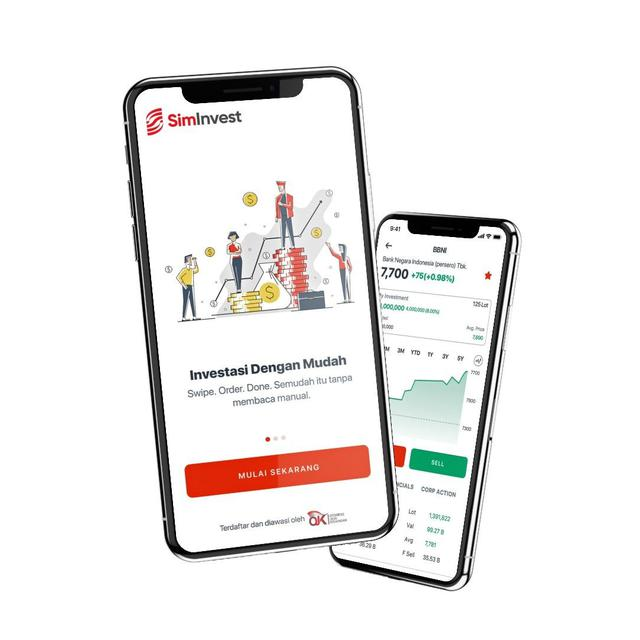

<section class="mt-5 p-5 text-center" id="banner">
  <!-- biar ngasih margin -->
  <div class="container">
    <!-- naro content di tengah -->
    <div class="d-sm-flex align-items-center justify-content">
      <div>
        <h1>Wujudkan Mimpimu bersama <span class="text-success">News-Axis</span></h1>
        <p class="load my-4">
          News-Axis adalah aplikasi untuk kamu yang ingin berdiskusi, analisa dan investasi saham dalam satu tempat.
        </p>
        <button
          class="btn btn-success btn-lg"
          data-bs-target="#enroll"
          data-bs-toggle="modal"
        >
          Mulai Investasi
        </button>
      </div>
      
    </div>
  </div>

</section>